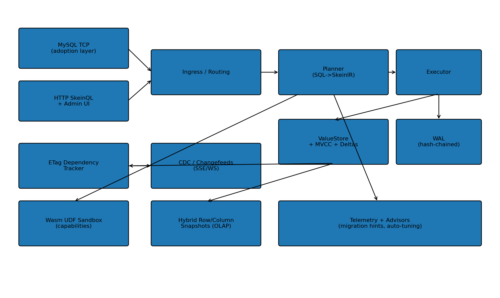

SkeinDB is a single-binary database combining cell-interned MVCC storage, MySQL & PostgreSQL compatibility, 20 opt-in research features (14 hardened), and a full web admin — all in one Rust executable.
Everything ships in one binary. No external dependencies, no cluster of services.
Every value is content-addressed. Identical cells across rows, versions, and tables share one physical representation — automatic deduplication without compression overhead. Segment-backed .rseg row storage is now the default serve mode.
Connect with any MySQL client. SkeinDB speaks the MySQL binary protocol with 678 corpus-backed compatibility statements, window functions, user variables, prepared statements, broad COM_QUERY coverage, and WordPress admin parity including Users/Site Health query coverage, installer seed-query regressions, and a clean live admin sweep across the core screens.
Connect with early PostgreSQL clients. SkeinDB now ships a partial PG v3 baseline on port 5432: startup/auth handshake, managed DB-user password auth, SSL rejection, simple queries, common bootstrap probes like SHOW server_version plus current_setting(...), and simple-query failed-transaction ReadyForQuery(E) handling backed by the shared engine.
SkeinQL RPC runs over HTTP/1.1, HTTP/2, and QUIC from the same binary, with dedicated integration tests for transport parity and reconnect behavior.
26 interactive panels compiled into the binary. Schema browsing, data manipulation, cluster control, dedicated telemetry/security centers, dialect-aware SQL workspaces, password-backed DB users, persisted HTTP bearer tokens, and dedicated panels for all 20 research features, including a click-first Easy Viewer with inline database creation, live create-table preview/validation, identifier-safe SQL generation, fail-closed destructive actions, and a live Index Advisor page with ranked suggestions plus observed-before/expected-after scan reports.
From differential privacy and HNSW vector search to Merkle forensic proofs and causal ETags — 14 tracks are hardened with real algorithms and integration tests; all 20 have RPC stubs, admin panels, and test coverage.
9 typed cluster methods for topology lifecycle: join tokens, node admission, shard placement, replica promotion, and RPC fanout replication with recursion suppression.
Five layers from client interface to persistence, unified by typed SkeinQL method dispatch.

Each track has RPC methods, a dedicated admin panel, and automated test coverage. Click any track for details.
From zero to running in four commands.
# Clone the repository git clone https://github.com/pinkysworld/SkeinDB.git cd SkeinDB # Build cargo build --release # Run all tests cargo test # Start the server ./target/release/skeindb serve --data ./data --http 8080 # Open the admin panel http://127.0.0.1:8080/admin # Send your first SkeinQL RPC request curl -s -X POST http://127.0.0.1:8080/api/v1/rpc \ -H "Content-Type: application/json" \ -d '{"jsonrpc":"2.0","id":1,"method":"system.ping","params":{}}'
Systems contribution covering architecture, cluster control, and 20 research tracks.
Michél Nguyen · University of the People
SkeinDB addresses the divide between production database systems and research prototypes through a novel single-binary architecture that co-hosts a MySQL-compatible SQL layer, a typed RPC control surface (SkeinQL), and 20 experimental research features within one executable process. The paper presents four dimensions of contribution: cell-interned MVCC storage, persistent cluster control-plane, 20 research tracks with working implementations, and comprehensive web administration.